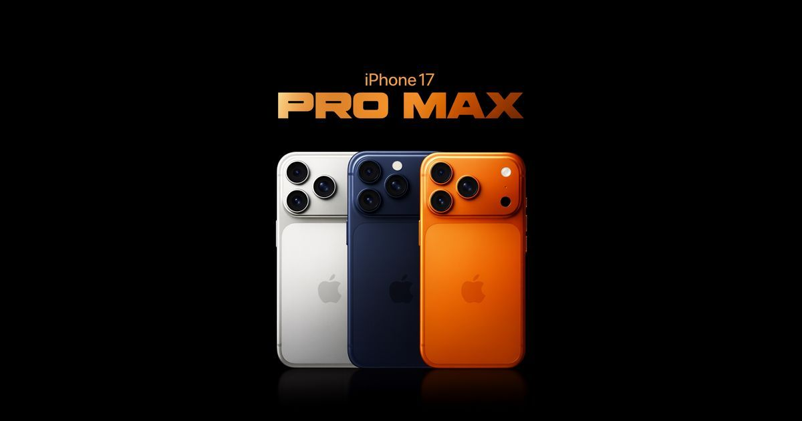

Alexander curo llaccta
La historia de Apple
Apple fue fundada en 1976 por Steve Jobs, Steve Wozniak y Ronald Wayne en California. Comenzó fabricando computadoras personales y con los años se convirtió en una de las empresas de tecnología más importantes del mundo.

En 2007 presentó el primer iPhone, un producto que cambió para siempre la manera en que nos comunicamos, tomamos fotos y usamos internet. Desde entonces, cada nuevo modelo busca ofrecer más rendimiento y mejor diseño. y sacaron nuevos telefonos como el iphone 17 pro max los mas actuales
Hoy su ecosistema incluye el iPhone, el iPad, la Mac, el Apple Watch y los AirPods, todos pensados para funcionar juntos de forma sencilla.